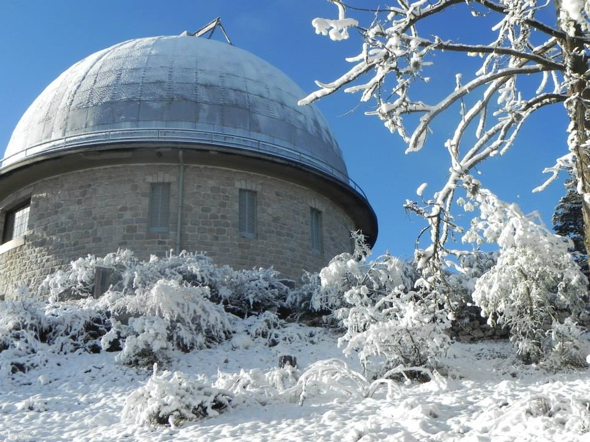
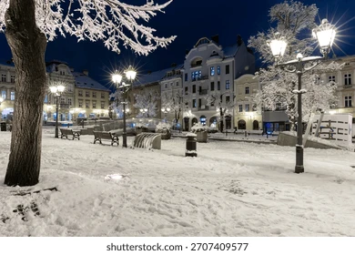
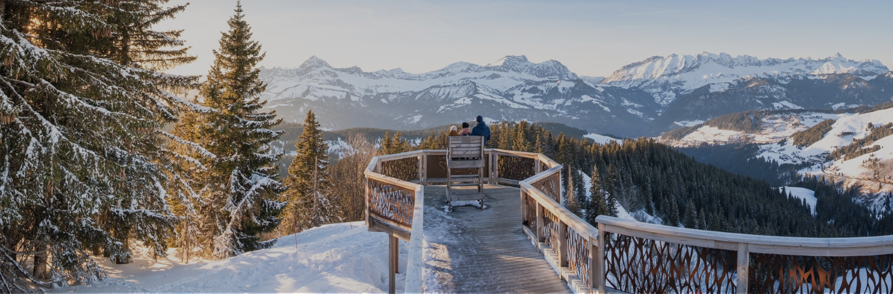

¡Explora nuestros atractivos turisticos!
Ciudad Porrima cuenta con una gran variedad de atractivos turisticos que combinan paisajes naturales, espacios culturales y actividades recreativas. Desde lagos rodeados de montañas hasta lugares dedicados a la observacion del cielo, cada rincon ofrece una experiencia diferente para sus visitantes.
Nuestros lugares turisticos
Lago Cristal

El Lago Cristal es uno de los paisajes mas representativos de Ciudad Porrima. Se encuentra ubicado en el Distrito Cristal rodeado de nieve y extensos arboles de abetos,ofreciendo un entorno natural ideal para descansar y disfrutar del paisaje.
Durante el invierno, sus aguas pueden congelarse completamente, formando una extensa capa de hielo que parece cristal, creando asi un hermoso paisaje de nieve y hielo. Durante el deshielo de Porrima, el entorno cambia con el aumento de las temporadas y el derretimiento de la nieve.
Actividades
- Recorrer los senderos que rodean el Lago
- Observar la fauna y flora local
- Disfrutar del paisaje y tomar fotografias
- Practicar patinaje en las zonas habilidadas cuando el hielo esta seguro.
Observatorio Boreal

El Observatorio Boreal es uno de los sitios mas reconocidos de Ciudad Porrima. Se encuentra en el barrio Los Astros y esta dedicado a la observacion y el estudio del espacio.
Sus instalaciones cuentan con telescopios especializados que permiten observar estrellas, planetas y otros cuerpos celestes. Ademas, es uno de los mejores lugares de la ciudad para cotemplar la famosa lluvia de meteoros que ilumina el cielo nocturno durante determinadas epocas del año.
Actividades
- Participar en sesiones de observacion astronomica.
- Observar planetas y constelaciones mediante el telescopio.
- Asistir a charlas y talleres sobre astronomia.
- Participar en eventos especiales relacionados con la astronomía.
- Visitar la exposición anual sobre el universo.
- Conocer mas sobre la lluvia de meteoros a partir de sus observaciones y exposiciones.
Plaza de los Fundadores

La plaza de los fundadores es uno de los espacios públicos más importantes de Ciudad Porrima, ubicado en barrio Los Fundadores. En ella se encuentra un edificio historico llamado Palacio de los Fundadores, donde se llevo acabo el encuentro oficial en el que el antiguo asentamiento fue reconocido como ciudad.
Esta construccion, de arquitectura tradicional, conserva parte de la historia y la identidad de Porrima. Actualmente, funciona como un espacio institucional y cultural donde se realizan reuniones, actos conmemorativos y actividades relacionadas con la comunidad.
La plaza que rodea el edificio cuenta con senderos de piedra, bancos, faroles decorativos y espacios verdes. Es un espacio de encuentro tanto para los habitantes como para los visitantes. Ideal para quienes desean aprender mas sobre la historia de la ciudad.
Actividades
- Conocer el edificio historico y su arquitectura
- Explorar las instalaciones y sus características arquitectónicas
- Visitar sus exposiciones sobre la fundacion de Porrima
- Participar en visitas guiadas sobre la historia de la ciudad
- Ir a la biblioteca historica
Mirador del Valle Nevado

El mirador del Valle Nevada es uno de los mejores lugares para contemplar los paisajes de Ciudad Porrima. Se encuentra en los Altos del valle, una zona elevada en las afueras de la ciudad, rodeada de montañas y bosques de abetos, desde donde se puede apreciar distintas partes de la region.
Su plataforma permite disfrutar de una vista panoramica de los alrededores. Durante el invierno, las montañas cubiertas de nieve ofrecen un paisaje llamativo, mientras que durante el deshielo de Porrima se pueden apreciar los cambios en la naturaleza.
Actividades
- Disfrutar de la vista panoramica del valle y las montañas
- Tomar fotografias del paisaje y la naturaleza
- Observar la fauna local desde el mirador
- Participar en actividades de observacion de las distintas aves y animales de la region
- Realizar caminatas por los senderos que rodean el mirador
- Participar en visitas guiadas por la zona
Recomendaciones para visitantes
Para disfrutar al maximo de Ciudad Porrima, recomendamos tener en cuenta algunos consejos antes de recorrer sus atractivos turisticos.
- Vestimenta:Llevar ropa abrigada, especialmente durante los meses de invierno.
- Calzado: Utiliza calzado comodo y adecuado para caminar sobre superficies nevadas o resbaladizas.
- Clima:Consulta las condiciones meteorologicas antes de planificar tus actividades al aire libre.
- Excursiones: Respetar las indicaciones y los senderos habilitados en los espacios naturales.
- Seguridad: Mantenerse informado sobre las condiciones de seguridad y seguir las recomendaciones de los guias locales.
- Observacion Astronomica: Consulta los horarios y eventos especiales del Observatorio Boreal para aprovechar al maximo la experiencia de observacion del cielo.